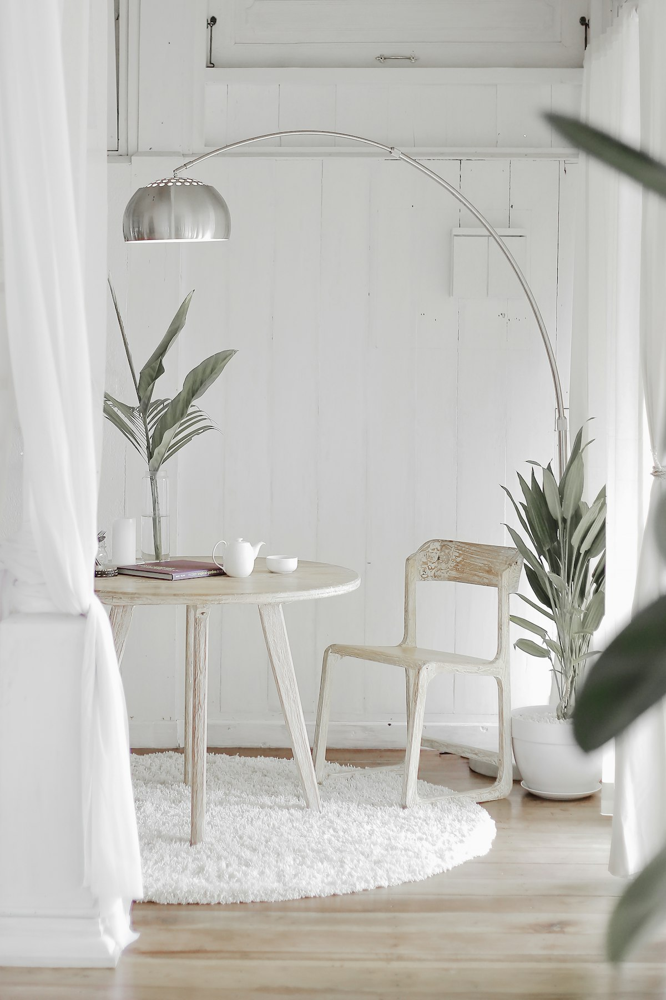
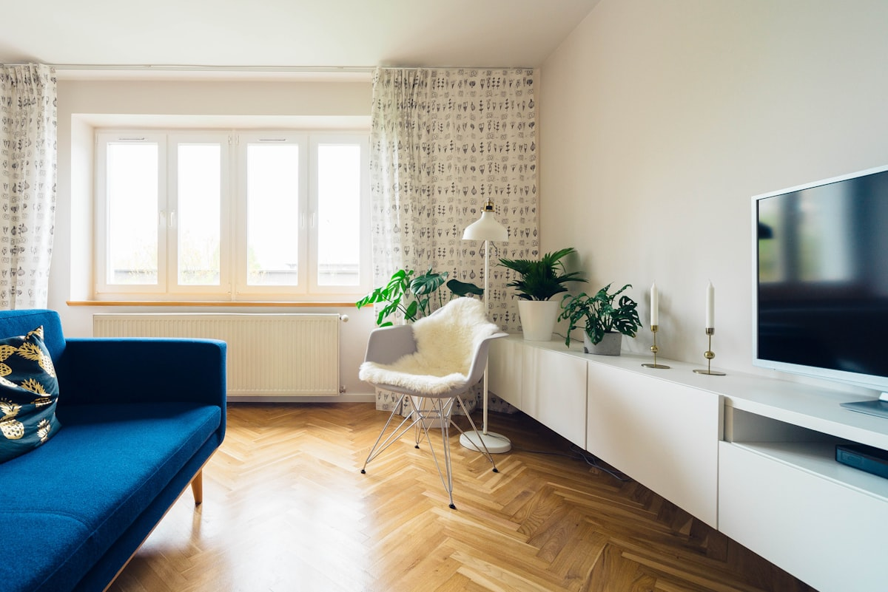

八月的午后，屋里像被扣了一口蒸锅。你摁下遥控器，设到 16 度，风开到最大，坐在出风口底下等了二十分钟——还是闷。摸摸出风，是凉的，可这屋子就是不降温。
到了晚上，刚开机那三分钟一股说不清的味儿飘出来，有点像久放的抹布，又有点像地下室。家里有小孩的，半夜开始咳嗽。
月底电费单一到，比上个月多出两百多。
其实这三件事——不凉、有味、费电——多半是同一个原因：空调该洗了，而且你用它的方式，可能一直是错的。这篇把八个真正管用的做法讲清楚，都是自己动手能做、不用叫师傅的。

一、不凉的第一嫌疑人：滤网，不是缺氟
大多数人一说空调不凉就想到"是不是没氟了"，然后打电话叫人加氟。师傅上门，鼓捣半小时，收两三百，走了。过一个月，又不凉了。
真相是：家用空调是密闭系统，不像汽车空调那样会自然损耗。只要不漏，用十年都不用加氟。 如果真缺氟，那一定是某处漏了，光加进去只是把钱打水漂，一两个月照样跑光。
判断是不是缺氟，有个不花钱的土办法：开制冷十五分钟后，去阳台看室外机那两根铜管。粗的那根应该结一层薄薄的凉露水，摸上去冰手。 如果粗管干巴巴不结露，或者细管结了一层白霜，那才是真缺氟，得找人查漏。反之，管子状态正常却不凉，问题九成在室内机。
而室内机不凉的头号原因，就是滤网堵了。一层灰糊在网上，风都吹不出来，冷量全闷在机器里。
滤网多久洗一次
- 天天开机的夏天：两周一次
- 隔三差五开：一个月一次
- 家里有猫狗、住临街或者装修不满一年：一周一次
洗法很简单：断电，掀开面板，两片滤网直接抽出来，拿到卫生间用温水冲，灰多的话挤点洗洁精拿软毛刷顺着纹路刷。关键是必须彻底晾干再装回去，带着水装回去等于给霉菌送温床——下一节要说的霉味就是这么来的。
一次洗滤网，制冷效果能回来一大截，电费也跟着降。这是投入产出比最高的一件事，五分钟搞定。
二、那股霉味，藏在滤网后面的"翅片"里
洗完滤网还有味，说明脏的不是滤网，是滤网后面那一排密密麻麻的金属薄片——行话叫蒸发器翅片。
制冷的时候，翅片表面温度很低，空气里的水汽在上面结成水珠。停机之后，这些水留在缝隙里慢慢阴干，加上黏在上面的灰尘和皮屑，就是霉菌最爱的环境。开机的一瞬间，风一吹，霉孢子连着那股味儿一起送到你脸上。
这也是为什么很多人一开空调就打喷嚏、嗓子痒。
自己洗翅片的正确做法
买一瓶空调专用清洗剂（超市或网上十几块一罐，泡沫型的）。步骤：
- 断电，不是关遥控器，是拔插头或者拉闸。这一步别偷懒。
- 取下滤网，露出后面的翅片。
- 在机器下方铺一块旧毛巾或者塑料袋接水。
- 把泡沫均匀喷在翅片上，别怕多，喷到全部覆盖。
- 静置 15 分钟，让泡沫把污垢泡软化开。
- 通电，开制冷最低温、最大风，运行 20 分钟。 冷凝水会自动把泡沫和脏东西一起从排水管冲走。
- 关机后，再开送风模式（不制冷）20 分钟吹干。
整个过程半小时，比叫师傅上门便宜十倍。第一次洗完，从出风口流出来的水多半是黑灰色的，那画面挺震撼。
注意：清洗剂只能喷翅片，别往电路板、风机马达上喷。风机滚筒（那个长条状带很多叶片的圆筒）如果也发黑长毛，自己拆比较麻烦，那种情况建议叫专业深度清洗。
三、26 度不是玄学，但重点不在数字
网上到处说"空调开 26 度最省电"，很多人不信，觉得是节能宣传。其实这个数字背后有实实在在的道理。
空调耗电的大头是压缩机。设定温度每调低 1 度，压缩机负荷大约增加 6%~8%。 从 26 调到 22，四度下去，耗电多将近三成。而人体在湿度适宜的情况下，26 度已经完全在舒适区间。
但真正的关键不是"必须 26"，而是这两点：
第一，别一进门就设 16 度。 空调不会因为你设得低就制冷更快——它的制冷功率是固定的，设 16 度只会让它到了 26 度也停不下来，一直往下压。正确做法是进门就设你想要的温度，然后耐心等十分钟。
第二，怕热的人调风速，不调温度。 同样 26 度，风速从"低"调到"高"，体感能差 2~3 度，而风机那点功率跟压缩机比几乎可以忽略。升温一度 + 加大风速，舒适度不变，电费明显降。
四、除湿模式，南方夏天的隐藏神器
遥控器上那个水滴图标，很多人一辈子没按过。
在梅雨季或者闷热的桑拿天，屋里湿度经常到 75% 以上。这种时候你就算把温度打到 24，还是觉得黏糊糊不爽快。因为人对闷热的感受，湿度的权重比温度更大。
除湿模式的原理是：压缩机低频运转，风机低速，专门把水汽抽出来，不追求快速降温。结果是——
- 体感变干爽，26 度就跟制冷 24 度一样舒服
- 因为压缩机不满负荷跑，耗电比制冷低 20% 左右
- 出风柔和，不会直吹得人头疼
适合场景：湿度大但气温不算极端（比如 28~31 度的雨天、夜里）。如果外面 38 度大晴天，还是老老实实开制冷，除湿模式降温太慢。

五、室外机的处境，决定了你室内机的效率
空调是把屋里的热搬到屋外。室外机就是负责"卸货"的那一端。如果它自己被热气包围，货就卸不出去，室内机再努力也白搭。
去阳台看一眼你家室外机，对照下面几条：
刷散热片的时候有个细节：必须顺着金属片的方向刷，别横着来。 那些片子很软，横刷会倒伏，一旦压扁了风就过不去，反而更糟。
还有一个常被忽略的：室外机不要用高压水枪对着猛冲。压力太大会把片子打变形，也可能把水灌进电控盒。用普通花洒的水流从上往下淋就够了。
六、别让空调的冷气从窗缝溜走
这一条不花一分钱，但效果立竿见影。
拉上遮光窗帘。 夏天下午西晒的房间，玻璃就是个电热板。一层厚窗帘能挡掉大部分辐射热，实测能让房间温度低 2~3 度。浅色、带遮光涂层的最好。
关门。 很多人开着卧室空调，门却敞着，等于给整套房子降温。把要用的那间关起来，制冷速度能快一倍。
堵住老房子的缝。 特别是老式推拉窗，缝隙能塞进一张卡片。买几米自粘密封条贴上，几块钱的事。窗式空调周围的缝、穿墙管道的洞，也一并用密封胶或者海绵堵掉。
开机前先排热。 从外面回到闷了一天的屋里，别急着关窗开空调。先开窗对流三五分钟，把积在屋顶的那层热空气放出去，再关窗开机。省下的是空调硬啃这些热量的时间。
七、开开关关最费电，别再"省着用"
"出门十分钟，空调关掉吧"——这个习惯其实在浪费电。
空调开机启动的瞬间，压缩机要克服静止阻力，电流是稳定运行时的 3~5 倍。而房间刚被降下来的温度，几分钟内也会回升，回来后又要重新硬降一遍。
具体怎么判断：
- 离开 1 小时以内：别关，把温度调高 2~3 度就行
- 离开 1~2 小时：可以关
- 超过 2 小时：关掉，还能顺便省下待机耗电
定频机和变频机的区别也在这里。 变频机是靠低频持续运转维持温度，最怕频繁启停——长时间稳定运行反而最省。如果你家是变频机（近八年买的基本都是），"开一会儿关一会儿"是最糟糕的用法。
睡觉的时候，与其定时两小时后关机，不如用睡眠模式。它会在后半夜自动把温度升高 1~2 度，既不会冻醒，又比全程恒温省电。

八、每次关机前，给它吹二十分钟风
这是最容易做、也最被忽略的一条。
前面说过，翅片上的冷凝水是霉味的源头。如果关机前先切到送风模式吹 20 分钟，把翅片上的水汽吹干，霉菌就长不起来。
坚持这个习惯，你的空调可以两三年不用深度清洗都不发臭。而不做这一步的机器，一个夏天下来就能闻出味儿。
有些新机器带"自清洁"或"防霉干燥"功能，本质就是自动执行这个吹干过程，关机后自己吹几分钟。翻翻遥控器，如果有，把它打开。
季末收机的时候更要做完整一套：洗滤网 → 洗翅片 → 送风吹干 1 小时 → 拔插头 → 罩上防尘罩。下一年开机就没有那股陈味了。
一张表：常见毛病对号入座
几个安全提醒
- 任何清洗动作前必须断电，拔插头或拉空开，只关遥控器不算。
- 挂机位置高，站稳梯子再操作，别踩椅子扶手，每年因为这个摔伤的人不少。
- 不要自己拆室外机外壳，里面有电容，断电后仍可能带电。
- 婴儿房尽量避免风直吹，出风口调成向上，让冷气自然沉降。
- 家里有过敏性鼻炎或哮喘的人，滤网清洗频率要加倍。
- 空调开着的房间，每 2~3 小时开窗透气几分钟，或者开新风。
写在最后
空调这东西，说到底就是个搬运热量的机器。它效率高不高，八成取决于两件事：风路通不通，热气排不排得掉。
滤网、翅片、室外机散热片——这三处干净了，制冷立刻回到出厂状态；窗帘、房门、密封条——把冷气锁在屋里，压缩机就不用一直加班。剩下的温度、风速、模式，只是在这个基础上的微调。
这个周末花半小时，把滤网抽出来洗一洗，去阳台看一眼室外机周围有没有被杂物围死。晚上再试试关机前吹 20 分钟送风。
一个夏天下来，凉快了，不闻霉味了，电费单也会替你说话。
💬 留言区